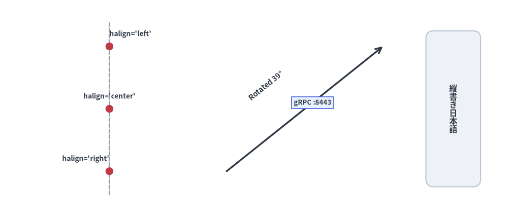
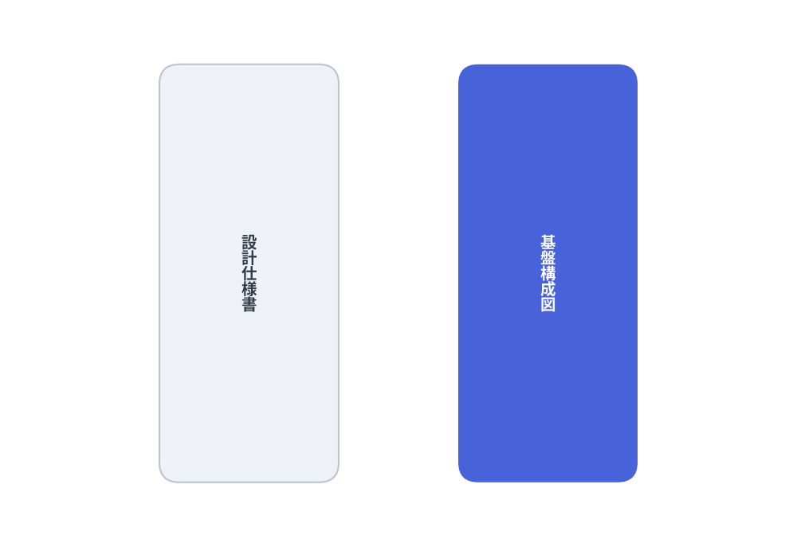
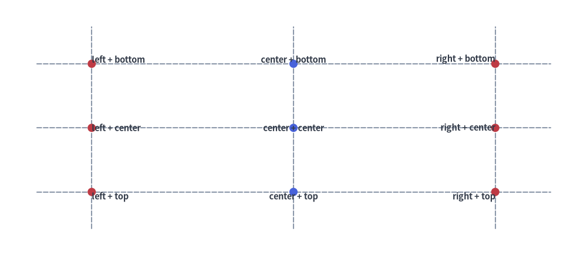
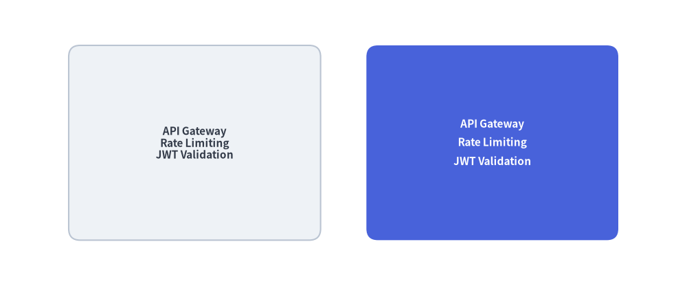
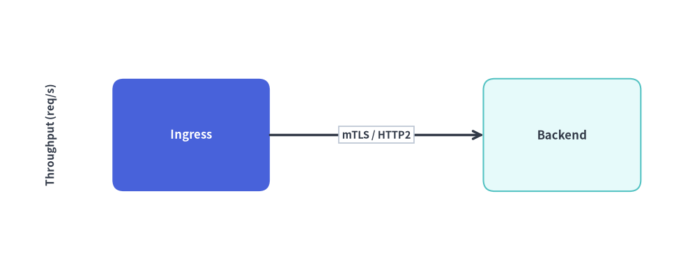
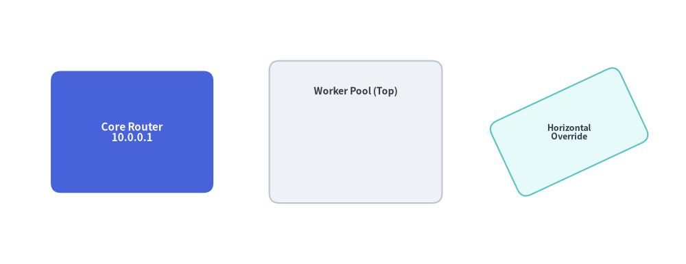

Text & Typography
Clear typography and precise coordinate alignment are essential for readable technical diagrams. Drawlib provides horizontal text, vertical East Asian (CJK) text, arbitrary rotation angles, multi-line formatting, padded background badges, and seamless embedded shape labels.
1. Overview of Text Rendering

Source Code
from drawlib.canvas import save, setup
from drawlib.lines import line
from drawlib.shapes import circle, rectangle
from drawlib.styles import Colors, Styles
from drawlib.text import text, text_vertical
setup(width=124, height=54)
# 1. Anchor alignment along x=28 guide line (left column)
line((28, 6), (28, 48), style=Styles.MutedDashed)
for y, align, label in [(42, "left", "halign='left'"), (27, "center", "halign='center'"), (12, "right", "halign='right'")]:
circle((28, y), radius=1.0, style=Styles.DangerFlat)
text((28, y + 2.2), label, style=Styles.DarkBold.patch(text_size=10.5, halign=align, valign="bottom"))
# 2. Rotated text & background badge over a connector line (middle column)
line((56, 12), (94, 42), arrow_head="->", style=Styles.DarkBold)
text((66, 33), "Rotated 39°", style=Styles.DarkBold.patch(text_size=10.5, angle=39))
badge_style = Styles.DarkBold.patch(
text_size=10.5,
text_bg_fill_color=Colors.Primary1,
text_bg_line_color=Colors.Primary4,
text_bg_line_width=1.2,
)
text((78, 28.5), "gRPC :8443", style=badge_style)
# 3. Vertical CJK typography (right column)
rectangle((111, 27), width=15, height=40, style=Styles.Neutral.patch(shape_r=2))
text_vertical((111, 27), "縦書き日本語", style=Styles.DarkBold.patch(text_size=11.5))
save()
2. Core Text Functions (drawlib.text)
All standalone text primitives are imported from drawlib.text:
from drawlib.text import text, text_vertical
2.1. Horizontal & Rotated Text (text)
text(
xy: tuple[float, float],
text: str,
*,
style: Style | None = None,
) -> None
xy: Coordinate anchor point(x, y)in canvas units.text: String content to render. Supports\nnewline characters for multi-line paragraphs.style: OptionalStyleinstance (defaults toStyles.Dark/ active theme default). Controls font family, point size, color, alignment (halign,valign), rotation (angle), coordinate offsets (xy_shift,xy_abs_shift), and background framing (text_bg_*).
2.2. Vertical CJK Text (text_vertical)
Renders East Asian characters (Japanese, Chinese) in traditional top-to-bottom vertical layout by stacking glyphs along a vertical centerline (halign="center"):
from drawlib.canvas import save, setup
from drawlib.shapes import rectangle
from drawlib.styles import Styles
from drawlib.text import text_vertical
setup(width=80, height=55)
rectangle((25, 27.5), width=18, height=42, style=Styles.Neutral.patch(shape_r=2))
text_vertical((25, 27.5), "設計仕様書", style=Styles.DarkBold.patch(text_size=14))
rectangle((55, 27.5), width=18, height=42, style=Styles.PrimaryFlat.patch(shape_r=2))
text_vertical((55, 27.5), "基盤構成図", style=Styles.WhiteBold.patch(text_size=14))
save()

3. Typography & Background Attributes on Style
Rather than passing separate TextStyle objects or scattered keyword arguments, Drawlib consolidates all typography, alignment, transform, and background badge attributes onto the immutable Style model (customizable via .patch()):
| Attribute | Type | Default | Description |
|---|---|---|---|
text_color |
Color | tuple | str |
Theme default | Glyph fill color (e.g. Colors.Gray7, Colors.White, "#1a73e8"). |
text_size |
float | str |
16.0 |
Font size in points (e.g. 10, 14, 20) or "small", "medium", "large". |
text_font |
FontBase | FontFile |
Font.SANSSERIF_REGULAR |
Font family and weight token from drawlib.fonts. |
halign |
"left" | "center" | "right" |
"center" |
Horizontal alignment relative to anchor x. |
valign |
"bottom" | "center" | "top" |
"center" |
Vertical alignment relative to anchor y. |
text_line_spacing |
float |
1.2 |
Vertical line height multiplier for multi-line strings. |
angle |
float |
0.0 |
Counter-clockwise rotation angle in degrees around anchor xy. |
text_flip |
bool |
False |
Rotates embedded shape text by 180° to prevent upside-down labels. |
xy_shift |
tuple[float, float] |
None |
Relative (dx, dy) offset rotated along with angle. |
xy_abs_shift |
tuple[float, float] |
None |
Absolute (dx, dy) canvas offset independent of rotation. |
text_bg_fill_color |
Color | tuple | str |
None |
Padded background badge fill color behind the text block. |
text_bg_line_color |
Color | tuple | str |
None |
Background badge border stroke color. |
text_bg_line_width |
float |
1.0 |
Background badge border stroke width (0 for borderless). |
text_bg_line_style |
"solid" | "dashed" | "dotted" | "dashdot" |
"solid" |
Background badge border stroke pattern. |
4. Coordinate Anchor Alignment (halign & valign)
By default, text() centers the text bounding box horizontally (halign="center") and vertically (valign="center") on xy. Adjusting halign and valign pins specific edges of the text box to xy:
halign="left": Text starts atxand extends to the right.halign="center"(default): Text is horizontally centered onx.halign="right": Text ends atxand extends to the left.valign="top": Top edge of the text hangs downward fromy.valign="center"(default): Text is vertically centered ony.valign="bottom": Bottom baseline of the text sits abovey.
from drawlib.canvas import save, setup
from drawlib.lines import line
from drawlib.shapes import circle
from drawlib.styles import Styles
from drawlib.text import text
setup(width=128, height=56)
# Crosshair guide lines
for y in [42, 28, 14]:
line((8, y), (120, y), style=Styles.MutedDashed)
for x in [20, 64, 108]:
line((x, 6), (x, 50), style=Styles.MutedDashed)
# Left-aligned column (x = 20)
for y, v_mode in [(42, "bottom"), (28, "center"), (14, "top")]:
circle((20, y), radius=0.9, style=Styles.DangerFlat)
text((20, y), f"left + {v_mode}", style=Styles.DarkBold.patch(text_size=10.5, halign="left", valign=v_mode))
# Center-aligned column (x = 64)
for y, v_mode in [(42, "bottom"), (28, "center"), (14, "top")]:
circle((64, y), radius=0.9, style=Styles.PrimaryFlat)
text((64, y), f"center + {v_mode}", style=Styles.DarkBold.patch(text_size=10.5, halign="center", valign=v_mode))
# Right-aligned column (x = 108)
for y, v_mode in [(42, "bottom"), (28, "center"), (14, "top")]:
circle((108, y), radius=0.9, style=Styles.DangerFlat)
text((108, y), f"right + {v_mode}", style=Styles.DarkBold.patch(text_size=10.5, halign="right", valign=v_mode))
save()

5. Multi-Line Text & Line Spacing (text_line_spacing)
Insert \n to break strings into multiple lines. Use text_line_spacing on Style to control vertical rhythm (default multiplier is 1.2):
from drawlib.canvas import save, setup
from drawlib.shapes import rectangle
from drawlib.styles import Styles
setup(width=120, height=50)
sample = "API Gateway\nRate Limiting\nJWT Validation"
# Default line spacing (1.2x)
rectangle(
(34, 25),
width=44,
height=34,
style=Styles.Neutral.patch(shape_r=2),
text=sample,
text_style=Styles.DarkBold.patch(text_size=11),
)
# Relaxed line spacing (1.7x)
rectangle(
(86, 25),
width=44,
height=34,
style=Styles.PrimaryFlat.patch(shape_r=2),
text=sample,
text_style=Styles.WhiteBold.patch(text_size=11, text_line_spacing=1.7),
)
save()

6. Rotated Labels (angle) & Background Badges (text_bg_*)
- Rotation (
angle): Rotates the text counter-clockwise in degrees aroundxy. - Background Badges (
text_bg_fill_color,text_bg_line_color,text_bg_line_width,text_bg_line_style): Draws a padded rectangular pill behind the text—ideal for placing protocol or latency callouts directly over connector lines without the line cutting through glyphs.
from drawlib.canvas import save, setup
from drawlib.lines import line
from drawlib.shapes import rectangle
from drawlib.styles import Colors, Styles
from drawlib.text import text
setup(width=124, height=48)
# Rotated vertical Y-axis title (angle=90)
text((9, 24), "Throughput (req/s)", style=Styles.DarkBold.patch(text_size=11.0, angle=90))
# Service nodes
rectangle((34, 24), width=28, height=20, style=Styles.PrimaryFlat.patch(shape_r=2), text="Ingress", text_style=Styles.WhiteBold.patch(text_size=12.0))
rectangle((100, 24), width=28, height=20, style=Styles.SecondaryNeutral.patch(shape_r=2), text="Backend", text_style=Styles.DarkBold.patch(text_size=12.0))
# Connector with overlaid background badge
line((48, 24), (86, 24), arrow_head="->", style=Styles.DarkBold)
badge = Styles.DarkBold.patch(
text_size=10.5,
text_bg_fill_color=Colors.White,
text_bg_line_color=Colors.Gray4,
text_bg_line_width=1.2,
text_bg_line_style="solid",
)
text((67, 24), "mTLS / HTTP2", style=badge)
save()

7. Embedded Shape Text (text= & text_style=)
Every shape primitive in drawlib.shapes (rectangle, circle, cylinder, rhombus, chevron, etc.) accepts text and text_style directly, eliminating the need to calculate center coordinates for a separate text() call:
- Automatic Luminance Contrast: When
text_styleis omitted, Drawlib inspects the shape's fill luminance and automatically selects high-contrast dark or white text. - Offsetting Embedded Labels (
xy_shift/xy_abs_shift): Patchxy_shift=(dx, dy)ontext_styleto nudge the label relative to the shape's center (for example, pushing a title toward the top of a container card). - Independent Label Angle (
angle/text_flip): Embedded text rotates with the shape by default; setangleortext_flip=Trueontext_styleto override the label orientation.
from drawlib.canvas import save, setup
from drawlib.shapes import rectangle
from drawlib.styles import Styles
setup(width=126, height=48)
# 1. Centered embedded text with explicit WhiteBold style
rectangle(
(23, 24),
width=32,
height=24,
style=Styles.PrimaryFlat.patch(shape_r=2),
text="Core Router\n10.0.0.1",
text_style=Styles.WhiteBold.patch(text_size=11.0),
)
# 2. Shifted embedded header using xy_shift=(0, 8)
rectangle(
(65, 24),
width=36,
height=28,
style=Styles.Neutral.patch(shape_r=2),
text="Worker Pool (Top)",
text_style=Styles.DarkBold.patch(text_size=10.5, xy_shift=(0, 8)),
)
# 3. Rotated shape with horizontal text override (angle=0 on text_style)
rectangle(
(106, 24),
width=28,
height=18,
style=Styles.SecondaryNeutral.patch(shape_r=2, angle=25),
text="Horizontal\nOverride",
text_style=Styles.DarkBold.patch(text_size=10.5, angle=0),
)
save()
